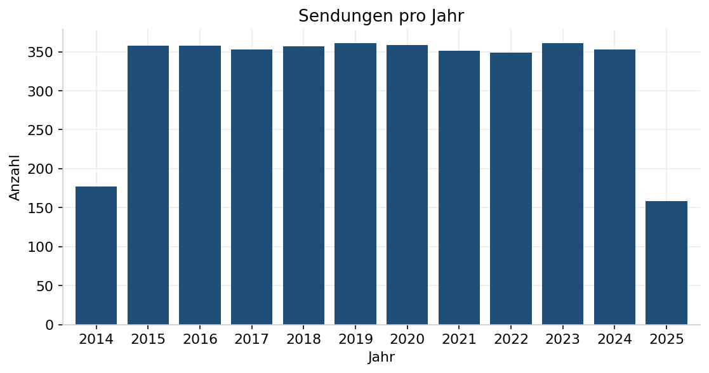
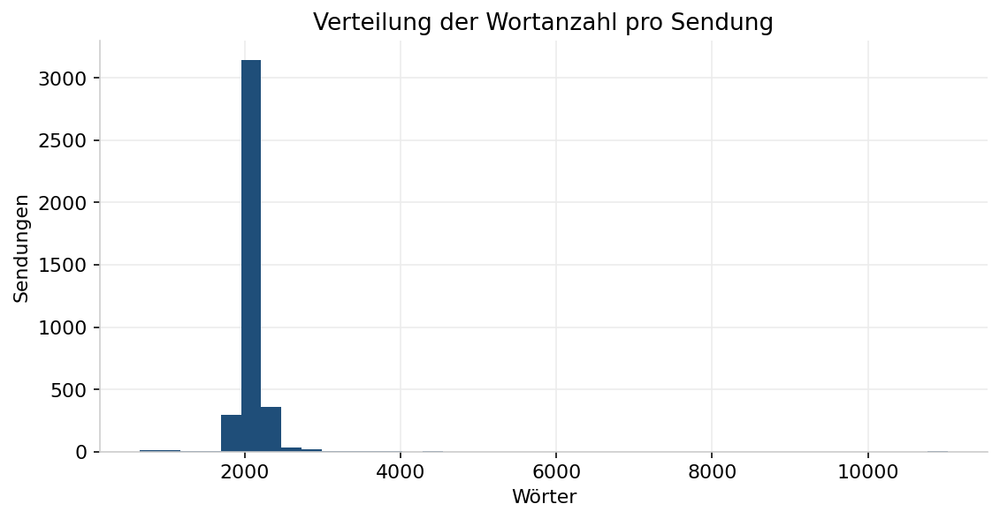
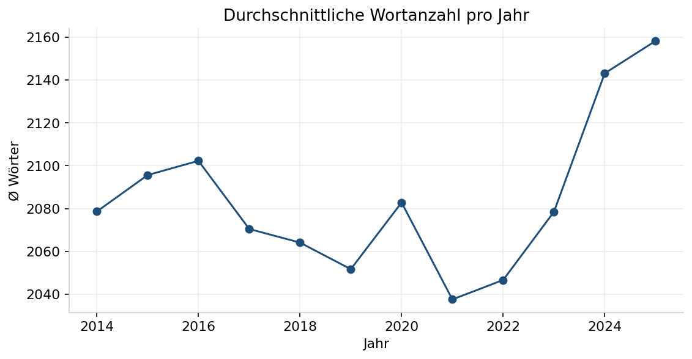
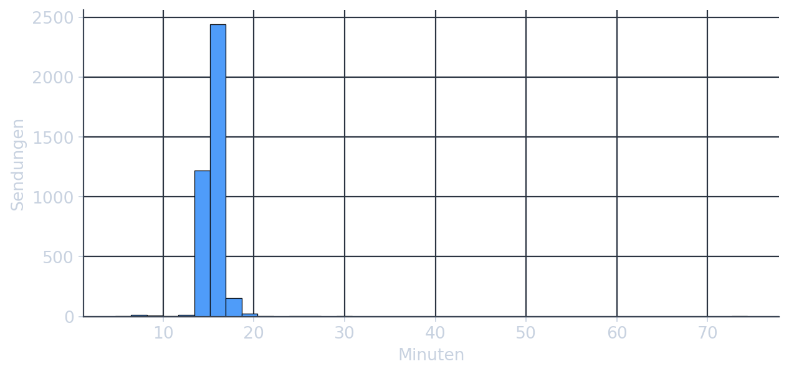
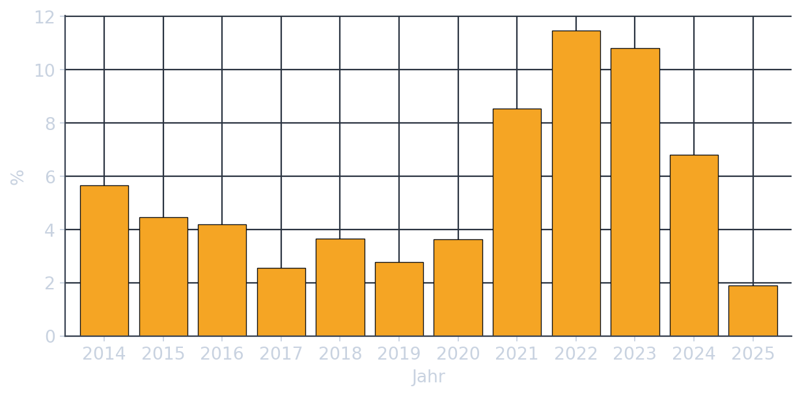
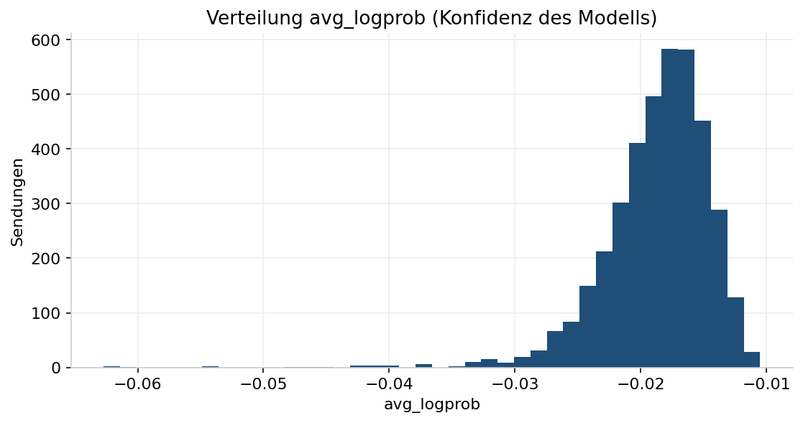

Tagesschau um 20 Uhr
Aggregierte Auswertung von 3.895 Hauptausgaben, automatisch transkribiert. Wähle links eine Kennzahl. Gezeigt werden ausschließlich selbst berechnete Werte – keine Audios, keine Transkripte.
Überblick
Eckdaten des Korpus über den gesamten erfassten Zeitraum.
Sendungen pro Jahr
Anzahl der erfassten 20-Uhr-Ausgaben je Jahr. Der Korpus beginnt am 30.03.2014 und reicht bis 01.12.2025; das erste und das letzte Jahr sind daher angeschnitten.

| Jahr | Sendungen |
|---|---|
| 2014 | 177 |
| 2015 | 358 |
| 2016 | 358 |
| 2017 | 353 |
| 2018 | 357 |
| 2019 | 361 |
| 2020 | 359 |
| 2021 | 351 |
| 2022 | 349 |
| 2023 | 361 |
| 2024 | 353 |
| 2025 | 158 |
Wortanzahl
Wörter pro Ausgabe – Verteilung über alle Sendungen sowie der Jahresdurchschnitt.


| Jahr | Ø Wörter |
|---|---|
| 2014 | 2.079 |
| 2015 | 2.096 |
| 2016 | 2.102 |
| 2017 | 2.070 |
| 2018 | 2.064 |
| 2019 | 2.052 |
| 2020 | 2.083 |
| 2021 | 2.038 |
| 2022 | 2.047 |
| 2023 | 2.078 |
| 2024 | 2.143 |
| 2025 | 2.158 |
Audio-Dauer
Verteilung der Audio-Längen über alle erfassten Sendungen.

| Jahr | Ø Dauer (min) |
|---|---|
| 2014 | 15,2 |
| 2015 | 15,4 |
| 2016 | 15,5 |
| 2017 | 15,4 |
| 2018 | 15,4 |
| 2019 | 15,4 |
| 2020 | 15,7 |
| 2021 | 15,3 |
| 2022 | 15,4 |
| 2023 | 15,5 |
| 2024 | 15,9 |
| 2025 | 15,9 |
Transkriptqualität
Ohne erkannte Einleitung markiert Ausgaben, in denen die typische Anfangsformel fehlt – ein Hinweis auf am Anfang abgeschnittenes Audio. avg_logprob ist die mittlere Token-Wahrscheinlichkeit des Modells: je näher an 0, desto sicherer.


| Jahr | Ohne Einleitung |
|---|---|
| 2014 | 5,6 % |
| 2015 | 4,5 % |
| 2016 | 4,2 % |
| 2017 | 2,5 % |
| 2018 | 3,6 % |
| 2019 | 2,8 % |
| 2020 | 3,6 % |
| 2021 | 8,5 % |
| 2022 | 11,5 % |
| 2023 | 10,8 % |
| 2024 | 6,8 % |
| 2025 | 1,9 % |
Quelle & Recht
Methodik
- Quelle: öffentlich ausgestrahlte tagesschau 20:00 Uhr (ARD / Das Erste), Sendungsarchiv von tagesschau.de.
- Transkription: automatisch mit OpenAI Whisper, Modell
large-v3-turbo(int8). - Auswertung: Python (pandas, matplotlib); alle Werte werden bei jedem Build aus den Rohdaten neu berechnet.
- Stand: 30.03.2014 – 01.12.2025, 3.895 Sendungen, davon 100,0% transkribiert.
Rechtlicher Hinweis
Diese Seite zeigt ausschließlich aggregierte, selbst berechnete Auswertungen. Es werden keine Audiodateien, Transkripte oder Untertitel veröffentlicht. Die zugrunde liegenden Sendungen sind urheber- und leistungsschutzrechtlich geschützt (u. a. § 87 UrhG); die gezeigten Kennzahlen sind daraus abgeleitete Fakten.
„tagesschau“ und „ARD“ sind Marken der jeweiligen Rechteinhaber. Dieses private Datenanalyse-Projekt steht in keiner Verbindung zur ARD.
Impressum
[Vor- und Nachname]
[Straße und Hausnummer]
[PLZ Ort]
E-Mail: [adresse@example.com]